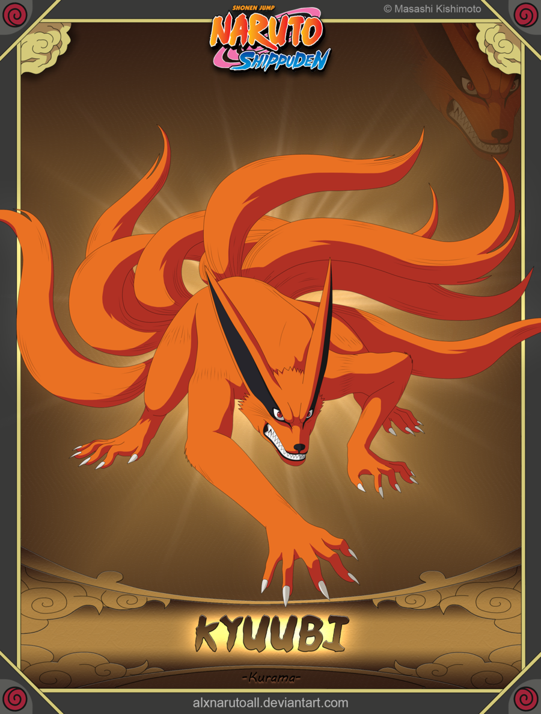

Como aldeia de um dos Cinco Grandes Países Shinobi, Konoha tem um KAGE como líder, o HOKAGE. A aldeia reside no fundo de uma floresta na base de uma montanha conhecida como Monumento Hokage, ao qual tem os rostos gravados de todos aqueles que ocuparam a residência do Hokage.
No início dos tempos, durante a Era dos Estados Combatentes, os ninjas eram compostos por clãs mercenários que pensavam apenas em lutar.
Os grupos mais fortes eram os das famílias Senju e Uchiha, que duelavam constantemente. Um dia, Hashirama Senju, líder do seu clã,
decidiu pedir uma trégua para os Uchiha após Madara Uchiha, seu amigo de infância, passar a liderar sua família.
As duas famílias colocaram um fim a sua rivalidade, juntaram forças e criaram Konohagakure.

Pouco tempo depois, outras vilas surgiram, o que encerrou o período da Era dos Estados Combatentes. Hashirama acabou escolhido como primeiro Hokage da vila, mas a escolha não agradou Madara, que ficou com receio de ver seu clã ser oprimido pelos Senju. Eventualmente, Madara abandonou a vila e chegou a usar Kurama para desafiar Hashirama. No entanto, o Uchiha acabou morto e para conter o poder da Raposa de Nove Caudas, a vila passou a selar a besta entre os membros do Clã Uzumaki.
Kurama, mais conhecido como Nove-Caudas, foi uma das nove bestas de caudas. Devido ao fato de durante séculos ter sido usado como uma ferramenta para a guerra e considerado um monstro que não sentia emoções, Kurama passou a odiar a humanidade. Depois de ter sido selado em Naruto Uzumaki, Kurama tentou manter suas opiniões negativas sobre o mundo, mas a insistência de Naruto em tratá-lo com respeito o fez deixar seu ódio de lado e passar a se esforçar, usando seu poder para salvar o mundo.